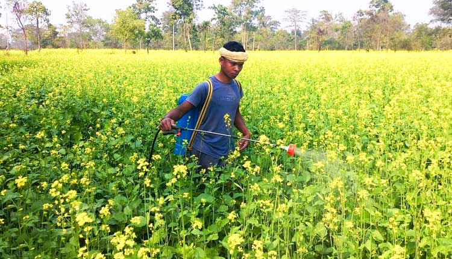
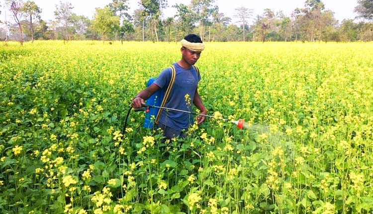
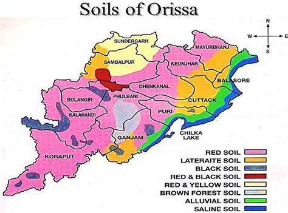
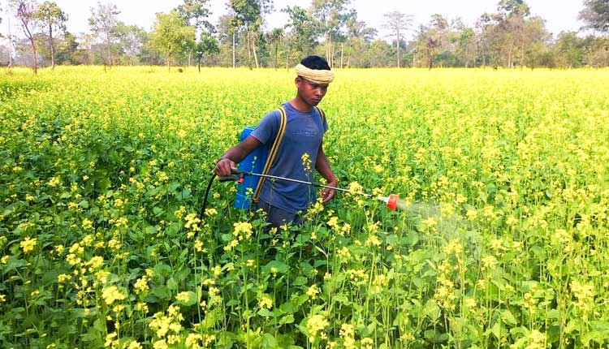

A guide on soil types, best crops, and farming techniques.
Soil Distribution in Odisha
Odisha has Red Soil, Laterite Soil, and Coastal Alluvial Soil, supporting crops like Rice, Pulses, Oilseeds, and Coconut.
Experts suggest using climate-resilient crop varieties, better irrigation, and agroforestry to sustain Odisha’s agriculture.
